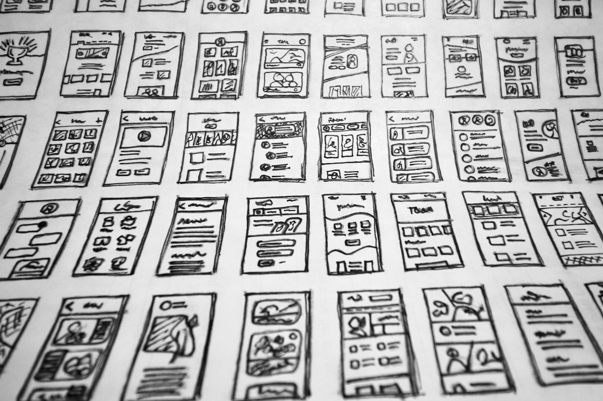

Developing responsive layouts can be a rewarding experience, allowing you to create seamless user experiences and interfaces. Understanding the principles of responsive design is crucial in today's dynamic web environment.
I want to learnEmbracing a mobile-first approach in development ensures that your web applications are optimized for smaller screens, providing a better experience for users on various devices.
Efficient coding practices and optimization techniques are essential for creating high-performance websites. This includes minimizing load times and utilizing resources effectively.
Doing things right from the beginning saves time and effort in the long run. Proper planning, clean code, and adherence to best practices contribute to the success of a web development project.
Web development may seem challenging, but with the right knowledge and tools, it becomes more manageable. Learning the fundamentals and staying updated on industry trends make the journey smoother.
Overcoming challenges in development is part of the process. With perseverance and continuous learning, you'll gain the skills needed to create sophisticated and user-friendly websites.
Breaking down complex tasks into smaller, manageable components facilitates understanding and implementation. It's an effective strategy in problem-solving and development.
Building skills gradually allows for a solid foundation. Start with the basics, master them, and progressively tackle more advanced concepts. This approach ensures a comprehensive understanding of web development.
Streamlining your workflow is crucial in programming. Discover tools and techniques to optimize your development process, leading to increased efficiency and better results.
Our company is dedicated to delivering high-quality web solutions. We prioritize innovation, user experience, and staying ahead in the ever-evolving field of technology.